PLACES TO VISIT IN JAPAN
ようこそ! / WELCOME!
Hello! Welcome to my blog. I visited Japan back in January of 2026, and
I had such a great time, so I wanted to share my experience. This blog
covers what to do in Japan and recommends places to go. If you are a
young traveler that is ready to explore, this may be right up your
alley. From the food, sweet treats, rich history and culture, to the
scenic views, Japan has them all! I will cover four cities: Kobe, Nara,
Kyoto, and Tokyo. I remember Kobe by its delicious food. In Nara, I went
to Nara Park, where a bunch of deer roam around. Todaiji Temple is also
in the area, which is a temple that is dedicated to Buddha. The giant
Buddha statue is hard to miss. Kyoto has a beautiful forest called the
Arashiyama Bamboo Forest. Kyoto also has the Fushimi Inari Taisha
shrine, which has endless, vibrant gates that are spread around Mount
Inari. Lastly, Tokyo was filled with busy streets and many city lights.
Even with all of the urban layouts of Tokyo, historical shrines
maintained their places.
神戸市 / kobe
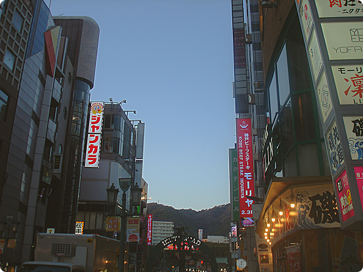
Kobe is the capital of the Hyogo Prefecture in the Kansai region of
Japan. It is not too far from Osaka! Kobe is the first city I explored
when I came to Japan. The Kobe beef was the most memorable part about
being in Kobe. The beef was phenomenal. The place I went to was Kobe
Beef Steak Restaurant Royal Mouriya. I have dietary restrictions with
certain food, so they were very understanding and accommodating. After
eating some delicious Kobe beef, I walked around Ikuta road. Eventually,
I stumbled upon Ikuta Shrine! It is said to be one of the oldest shrines
in the country, and people would come to pray for love and
relationships.
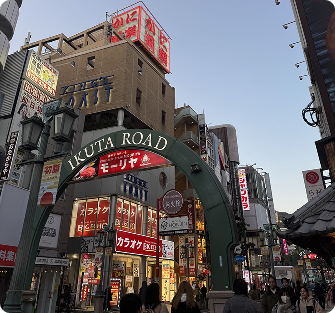
Ikuta Road Chuo Ward, Kobe, Hyogo
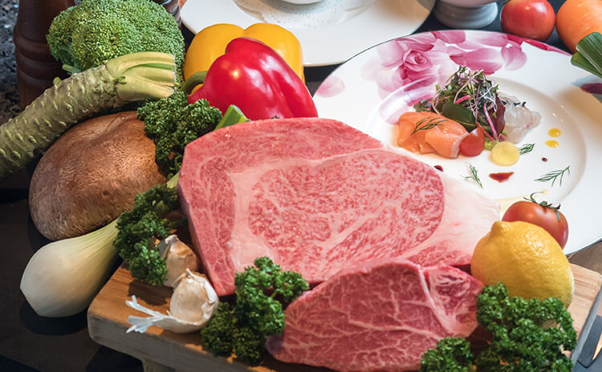
Kobe Beef Steak Restaurant Royal Mouriya
¥5,700-¥40,800
($36-$257.89 USD)
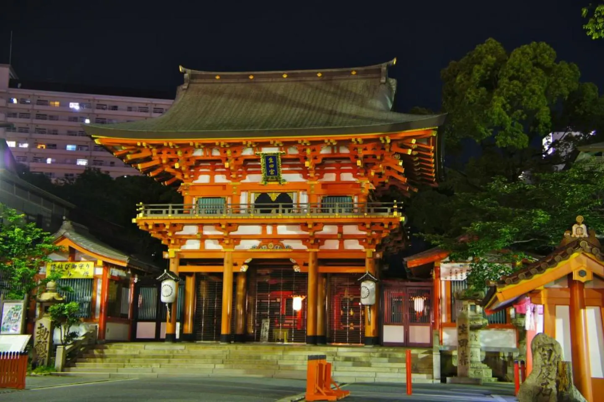
Ikuta Shrine Free!
奈良市 / nara
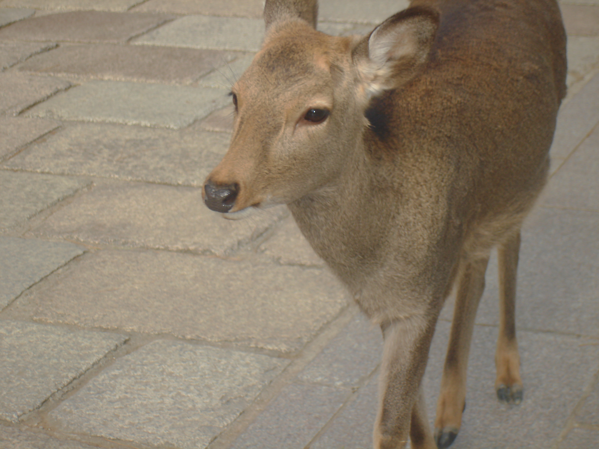
Nara was the next city I visited after Kobe. Nara is also in the Kansai
region of Japan, but it is part of the Nara Prefecture. Right around
Kintetsu-Nara Station, you will stumble upon Nara Park. This is the
place to go, as you will be greeted by the most polite deer ever! I saw
them countless times on social media, so I just had to check these
friendly deer out myself. Roughly 1,200 deer were roaming around freely
around the park. I bought a stack of crackers for 200 yen ($1.26 usd) to
feed the deer, and wasting no time, they were all surrounding me. They
started bowing at me, so I bowed back and gave them some crackers. Some
deer must have been really hungry...they nudged my elbow and headbutted
me from behind...I could not help it and bought one more stack to feed
more of them. I then visited the Todai-ji Temple, which had large Buddha
statues inside! I bought a good luck talisman. Before I left, I got a
little sweet treat from Tokyoan Hoten. Delicious!
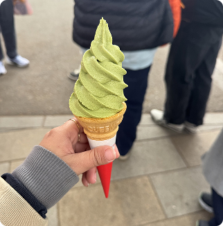
Tokyoan Hoten Matcha ¥450 ($2.84 USD)
.JPG)
Todai-ji Temple Daibutsuden (Big Buddha Hall)
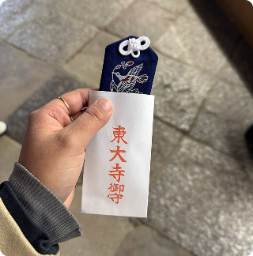
Todai-ji Temple ¥800 ($5.06 USD)
京都市 / kyoto
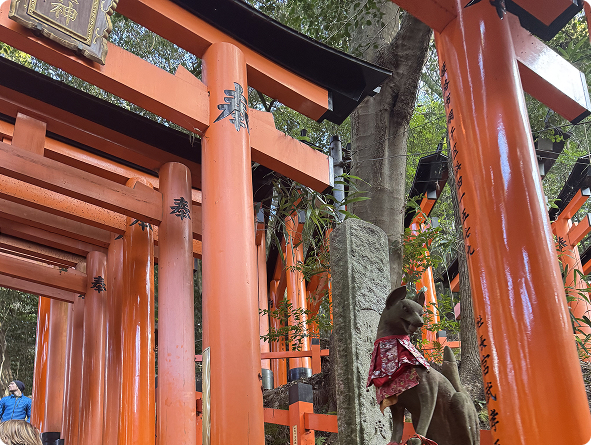
Exploring Kyoto was such a healing experience. Kyoto was rich with
culture and history, as there were hundreds of temples and shrines. With
all the time I could spend, I chose to visit the Fushimi Inari Taisha
temple. This was the place in Kyoto I was most looking forward to. The
temple was filled with thousands and thousands of vibrant, vermillion
torii gates that make their way around the mountain. These beautiful
gates created tunnels that felt endless. As I kept climbing, it became
more peaceful because there were less people and the air became quieter.
There were flat grounds where visitors could stop and rest, but one spot
in particular was extra special. As I climbed up to finally find flat
ground, it took one turn around to be faced with a beautiful view of the
cities and mountains behind them. After the temple, I walked around the
Arashiyama Bamboo forest, and it snowed a little bit! Later in the
evening, I walked around the stores, and stumbled upon the Onitsuka
Tiger shop. They have been a really popular shoe brand, and the
collections look super cool. Decided to get new kicks!
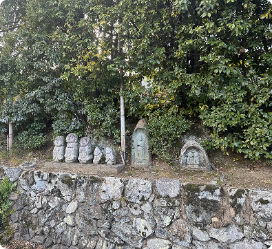
Arashiyama Bamboo Forest
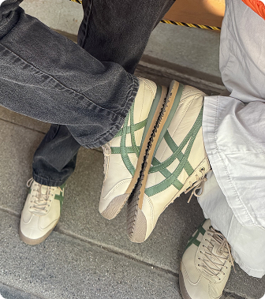
Onitsuka Tigers ¥42,546 ($240 USD)
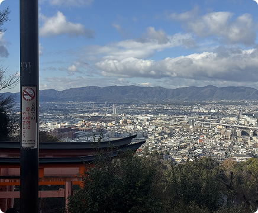
Fushimi Inari Taisha Temple
東京都 / tokyo
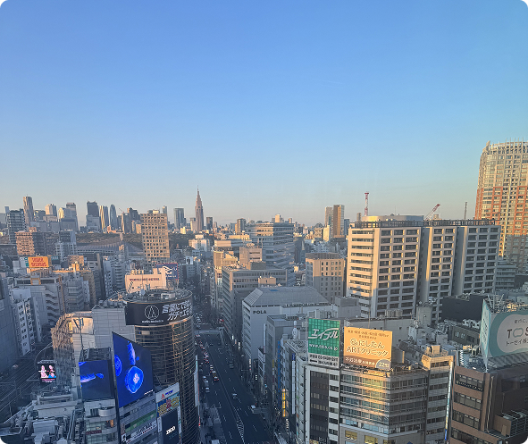
Last but certainly not least, Tokyo was my final destination before
heading back to Los Angeles. The contrast between Kyoto to Tokyo was
mind blowing. I was just walking through the historic city full of
ancient roads, and then I found myself walking through the bustling,
urban city of Tokyo. Despite -, shrines kept their places throughout the
city. One memorable shrine I visited was the Gotoku-ji Temple, which was
filled with a bunch of maneki-neko (the lucky cat). There were so many
in many different sizes! I couldn’t help but buy one for myself. I
visited TeamLab, an international art collective that is meant to be
interactive for visitors. One of the installations I found really cool
was The Infinite Crystal Universe, where I felt like I was surrounded by
a bunch of stars. Lastly, I visited the Shibuya district. Walking
through the famous Shibuya crossing was chaotic yet thrilling! The best
part was heading up to Shibuya Sky, where you can get a beautiful view
of all the city lights and Mt. Fuji in the distance.
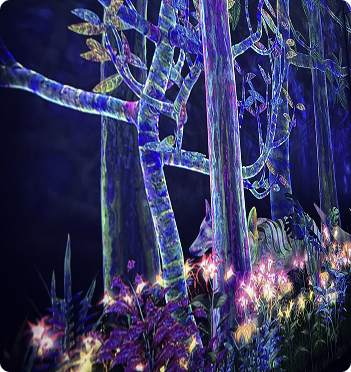
TeamLab Adults: ¥3,600-¥3,800 ($22-$31 USD)
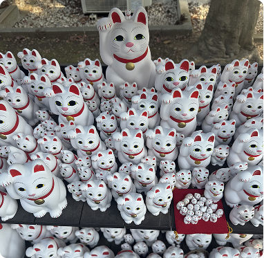
Goktoku-ji Temple Free entry; souvenirs: ¥500-¥7,000 ($3-$44 USD)
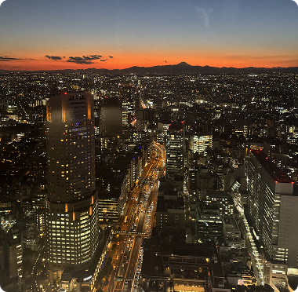
Shibuya Sky Adults: ¥2,700-3,400 ($17-21 USD)